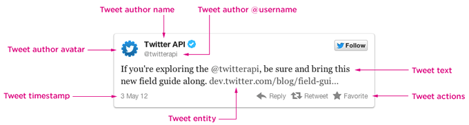

Tutorial - Retrieving tweets from the Twitter v1.1 API using OAuth, PHP & JavaScript
I’ve seen a lot of different Twitter widgets, from custom ones to the first official widget (remember the one you could theme up?) and more recently the one we see around the web today.
Twitter’s v1.0 API was pretty simple to work with. An ajax call to their API would return JSON & off you went. Twitter has evolved over the past couple of years and now requires all users to either embed timelines using their code snippet or follow their display requirements.
Twitter has done a pretty good job of providing a neutral & visibly appealing embeddable timeline, but it doesn’t always satisfy your requirements. Sometimes you have limited space or require something a bit more customised.
In March 2013 Twitter retired version 1 of their REST API. All requests now require OAuth signed headers.
What am I making?
After searching around for a while I came across a few implementations, of which only a handful looked promising. I finally settled on one by Mike Rogers (@mikerogers0), which he adapted from Peter Mortensen (@PeterMortensen)‘s original post on Stack Overflow back in March 2014.
As we only write object-oriented code at Parallax, with CakePHP as our framework, I decided to abstract this code out into a reusable class that I could retrieve results with using client-side JavaScript code.
How will it look?
How do I make it?
I’ve split this tutorial into two parts. To get everything working you need only read part 1, but to gain a better understand of why it works I’ve included part 2, which delves into the proxy itself.
- Part 1: The HTML, CSS & simple PHP
- Part 2: The advanced PHP (optional)
The source example I’ve provided comes in four parts:
- The HTML file (index.html) required to show the tweets
- The JavaScript file (js/tweets.js) required to request the tweets via ajax (with jQuery, js/jquery-1.11.1.min.js, as a depedency)
- The PHP file (get_tweets.php) that receives the ajax request & responds with the JSON
- The PHP file (twitter_proxy.php) that interfaces with Twitter’s API
The HTML
<!DOCTYPE html>
<html>
<head>
<meta charset="UTF-8">
<title>Twitter v1.1 API - A JavaScript and PHP Solution</title>
</head>
<body>
<div class="tweets-container">
<p>Loading...</p>
</div>
<script src="js/jquery-1.11.1.min.js"></script>
<script src="js/tweets.js"></script>
</body>
</html>
The HTML simply contains a container <div> and a Loading <p> paragraph inside it. This will show as the page loads and before we receive the response from the ajax request.
<div class="tweets-container">
<p>Loading...</p>
</div>
The Javascript
$(function(){
$.ajax({
url: 'get_tweets.php',
type: 'GET',
success: function(response) {
if (typeof response.errors === 'undefined' || response.errors.length < 1) {
var $tweets = $('<ul></ul>');
$.each(response, function(i, obj) {
$tweets.append('<li>' + obj.text + '</li>');
});
$('.tweets-container').html($tweets);
} else {
$('.tweets-container p:first').text('Response error');
}
},
error: function(errors) {
$('.tweets-container p:first').text('Request error');
}
});
});
The JavaScript will be used to send off an ajax request to get_tweets.php which will deal with our proxy. This request should return us some JSON, which we can then iterate over to pull specific tweet data out of.
The shorthand for $(document).ready(handler) is $(handler) (where handler is a function), so as soon as our document is ready, we run the ajax request:
$(function(){
// Ajax request here
});
Once the document is ready, we’ll use jQuery’s ajax function to send a GET request to get_tweets.php, and define a success function to handle the response.
$.ajax({
url: 'get_tweets.php',
type: 'GET',
success: function(response) {
// Code to execute once we receive a response
// 'response' is our response data, in JSON format
},
error: function(errors) {
// Handle errors with the request
}
});
Once we have our JavaScript object in JSON format (it’s an array of JavaScript objects in this instance), we can then iterate over that array using jQuery’s $.each array function.
Just before that, we initialise $tweets as a jQuery object containing opening and closing tag for a <ul>.
For each tweet object we can then retrieve i (the index of the object in the array), and obj (the tweet object), pull the text attribute out and drop it between <li> tags.
You’ll notice on the same line that we’re appending that string to the $tweets variable we created, which will fill our list with tweets.
Once we’re done with that, we’ll replace the contents of .tweets-container (current <p>Loading...</p>) with our tweets.
if (typeof response.errors === 'undefined' || response.errors.length < 1) {
var $tweets = $('<ul></ul>');
$.each(response, function(i, obj) {
$tweets.append('<li>' + obj.text + '</li>');
});
$('.tweets-container').html($tweets);
} else {
$('.tweets-container p:first').text('Response error');
}
The final JavaScript code will look like this:
$(function(){
$.ajax({
url: 'get_tweets.php',
type: 'GET',
success: function(response) {
if (typeof response.errors === 'undefined' || response.errors.length < 1) {
var $tweets = $('<ul></ul>');
$.each(response, function(i, obj) {
$tweets.append('<li>' + obj.text + '</li>');
});
$('.tweets-container').html($tweets);
} else {
$('.tweets-container p:first').text('Response error');
}
},
error: function(errors) {
$('.tweets-container p:first').text('Request error');
}
});
});
The PHP – get_tweets.php
<?phprequire_once('twitter_proxy.php');// Twitter OAuth Config options $oauth_access_token = 'your-token-here'; $oauth_access_token_secret = 'your-token-secret'; $consumer_key = 'your-api-key'; $consumer_secret = 'your-api-secret'; $user_id = '78884300'; $screen_name = 'parallax'; $count = 5;$twitter_url = 'statuses/user_timeline.json'; $twitter_url .= '?user_id=' . $user_id; $twitter_url .= '&screen_name=' . $screen_name; $twitter_url .= '&count=' . $count;// Create a Twitter Proxy object from our twitter_proxy.php class $twitter_proxy = new TwitterProxy( $oauth_access_token, // 'Access token' on https://apps.twitter.com $oauth_access_token_secret, // 'Access token secret' on https://apps.twitter.com $consumer_key, // 'API key' on https://apps.twitter.com $consumer_secret, // 'API secret' on https://apps.twitter.com $user_id, // User id (http://gettwitterid.com/) $screen_name, // Twitter handle $count // The number of tweets to pull out );// Invoke the get method to retrieve results via a cURL request $tweets = $twitter_proxy->get($twitter_url);echo $tweets;?>
The get_tweets.php file will do the following:
- Include the proxy using the built in
require_once()PHP function - Initialise a bunch of variables with configuration options in
- Build a URL for the proxy to send a request off to
- Create an instance of the Twitter Proxy class, passing our configuration options as arguments
- Use our instance to call the ‘get’ method from the proxy
- Echo out the result
The Result
You will be presented with a list of tweets.
Note: this still does not meet Twitter’s display requirements so please make extra effort to use more of the JSON response to include all the necessary details.

How will it look?
End of Part 1
For those of you interested in how the proxy works please scroll down to continue reading.
Part 2
Note: It is not essential to understand this part of the tutorial in order to get things working, you just need to make sure twitter_proxy.php is included.
Although I’ve marked this as ‘Intermediate – Advanced’, I’ll cover some of the basics first to help those new to PHP get up to speed.
The PHP – twitter_proxy.php
twitter_proxy.php is a PHP class containing a constructor (a function that is run as soon as it is called), a few private functions (functions only accessible from within the class), public functions (accessible from anywhere) and some private configuration options.
We’ll be using the OAuth 1.0 Protocol to authenticate with Twitter. If any of my explanations around OAuth need further clarification, please refer to the OAuth docs here: $.
<?php/** * Similar to Facebook Apps, you'll need to create a Twitter app first: https://apps.twitter.com/ * * Code below from http://stackoverflow.com/questions/12916539/simplest-php-example-retrieving-user-timeline-with-twitter-api-version-1-1 by Rivers * with a few modfications by Mike Rogers to support variables in the URL nicely */class TwitterProxy { /** * The tokens, keys and secrets from the app you created at https://dev.twitter.com/apps */ private $config = [ 'use_whitelist' => true, // If you want to only allow some requests to use this script. 'base_url' => 'https://api.twitter.com/1.1/' ];/** * Only allow certain requests to twitter. Stop randoms using your server as a proxy. */ private $whitelist = [];/** * @param string $oauth_access_token OAuth Access Token ('Access token' on https://apps.twitter.com) * @param string $oauth_access_token_secret OAuth Access Token Secret ('Access token secret' on https://apps.twitter.com) * @param string $consumer_key Consumer key ('API key' on https://apps.twitter.com) * @param string $consumer_secret Consumer secret ('API secret' on https://apps.twitter.com) * @param string $user_id User id (http://gettwitterid.com/) * @param string $screen_name Twitter handle * @param string $count The number of tweets to pull out */ public function __construct($oauth_access_token, $oauth_access_token_secret, $consumer_key, $consumer_secret, $user_id, $screen_name, $count = 5) { $this->config = array_merge($this->config, compact('oauth_access_token', 'oauth_access_token_secret', 'consumer_key', 'consumer_secret', 'user_id', 'screen_name', 'count'));$this->whitelist['statuses/user_timeline.json?user_id=' . $this->config['user_id'] . '&screen_name=' . $this->config['screen_name'] . '&count=' . $this->config['count']] = true; }private function buildBaseString($baseURI, $method, $params) { $r = []; ksort($params); foreach ($params as $key=>$value) { $r[] = "$key=" . rawurlencode($value); }return $method . "&" . rawurlencode($baseURI) . '&' . rawurlencode(implode('&', $r)); }private function buildAuthorizationHeader($oauth) { $r = 'Authorization: OAuth '; $values = []; foreach ($oauth as $key => $value) { $values[] = "$key=\"" . rawurlencode($value) . "\""; } $r .= implode(', ', $values);return $r; }public function get($url) { if (! isset($url)) { die('No URL set'); }if ($this->config['use_whitelist'] && ! isset($this->whitelist[$url])) { die('URL is not authorised'); }// Figure out the URL parameters $url_parts = parse_url($url); parse_str($url_parts['query'], $url_arguments);$full_url = $this->config['base_url'] . $url; // URL with the query on it $base_url = $this->config['base_url'] . $url_parts['path']; // URL without the query// Set up the OAuth Authorization array $oauth = [ 'oauth_consumer_key' => $this->config['consumer_key'], 'oauth_nonce' => time(), 'oauth_signature_method' => 'HMAC-SHA1', 'oauth_token' => $this->config['oauth_access_token'], 'oauth_timestamp' => time(), 'oauth_version' => '1.0' ];$base_info = $this->buildBaseString($base_url, 'GET', array_merge($oauth, $url_arguments));$composite_key = rawurlencode($this->config['consumer_secret']) . '&' . rawurlencode($this->config['oauth_access_token_secret']);$oauth['oauth_signature'] = base64_encode(hash_hmac('sha1', $base_info, $composite_key, true));// Make Requests $header = [ $this->buildAuthorizationHeader($oauth), 'Expect:' ]; $options = [ CURLOPT_HTTPHEADER => $header, //CURLOPT_POSTFIELDS => $postfields, CURLOPT_HEADER => false, CURLOPT_URL => $full_url, CURLOPT_RETURNTRANSFER => true, CURLOPT_SSL_VERIFYPEER => false ];$feed = curl_init(); curl_setopt_array($feed, $options); $result = curl_exec($feed); $info = curl_getinfo($feed); curl_close($feed);// Send suitable headers to the end user. if (isset($info['content_type']) && isset($info['size_download'])) { header('Content-Type: ' . $info['content_type']); header('Content-Length: ' . $info['size_download']); }return $result; } }
Brief introduction to object-oriented PHP
PHP (as well as a lot of other languages) can be written in a more structured way, with related code grouped together in separate files called classes.
To use the functionality of a class you can create an ‘instance’ of that class and save it into a variable. If you’ve already got get_tweets.php going then you’ve already done this:
// Create a Twitter Proxy object from our twitter_proxy.php class
$twitter_proxy = new TwitterProxy();
Once you have an instance saved as a PHP object ($twitter_proxy), you can then access its features, including its variables & methods (only the ones prefixed with ‘public’ though.)
You’ll notice the last code snippet I provided didn’t include anything between the parentheses (posh name for brackets). If you check the __construct() function in twitter_proxy.php you’ll see it requires a number of arguments (posh name for variables passed into a function). The __construct() function is a ‘Constructor’, which is a method (posh name for a function inside a class) that is run as soon as an instance of that class is created.
// Create a Twitter Proxy object from our twitter_proxy.php class
$twitter_proxy = new TwitterProxy();
$oauth_access_token, // 'Access token' on https://apps.twitter.com
$oauth_access_token_secret, // 'Access token secret' on https://apps.twitter.com
$consumer_key, // 'API key' on https://apps.twitter.com
$consumer_secret, // 'API secret' on https://apps.twitter.com
$user_id, // User id (http://gettwitterid.com/)
$screen_name, // Twitter handle
$count // The number of tweets to pull out
);
Note: These arguments don’t need to be on different lines (but they can be); I just did that so that I could include descriptive comments next to them.
Once we have an instance created, as I previously mentioned, we can then call its public methods, such as ‘get’.
// Invoke the get method to retrieve results via a cURL request
$tweets = $twitter_proxy->get($twitter_url);
So let’s look at what’s going on:
public function __construct($oauth_access_token, $oauth_access_token_secret, $consumer_key, $consumer_secret, $user_id, $screen_name, $count = 5) {$this->config = array_merge($this->config, compact('oauth_access_token', 'oauth_access_token_secret', 'consumer_key', 'consumer_secret', 'user_id', 'screen_name', 'count'));
Firstly __construct is passed all the arguments it needs, which then converts them into an array & merges that array with an array that already exists within the class:
/**
* The tokens, keys and secrets from the app you created at https://dev.twitter.com/apps
*/
private $config = [
'use_whitelist' => true, // If you want to only allow some requests to use this script.
'base_url' => 'https://api.twitter.com/1.1/'
];
So we now have a larger array of configuration options.
$this->whitelist['statuses/user_timeline.json?user_id=' . $this->config['user_id'] . '&screen_name=' . $this->config['screen_name'] . '&count=' . $this->config['count']] = true;
The above line of code adds a specific URL to our whitelist, which we’ll use later to check whether we’re being passed a valid URL – this prevents people borrowing your proxy for use on their own website.
Let’s now look at what ‘get’ does.
It checks whether the URL argument is set, and if not, it runs die(), which will prevent any further code from running.
The next few lines check that a whitelist exists, and that the URL we’ve passed into the get function is on our whitelist.
if ($this->config['use_whitelist'] && ! isset($this->whitelist[$url])){
die('URL is not authorised');
}
We then use parse_url() to separate the URL into an array of parts, then use parse_str() to separate anything in the query string (everything after ‘?’ in the URL) into another array.
The following code creates two variables containing the URLs:
$full_url = $this->config['base_url'] . $url; // https://api.twitter.com/1.1/statuses/user_timeline.json?user_id=78884300&screen_name=parallax&count=5$base_url = $this->config['base_url'] . $url_parts['path']; // https://api.twitter.com/1.1/statuses/user_timeline.json
To use OAuth we need to set up an array with some specific keys and values:
// Set up the OAuth Authorization array
$oauth = [
'oauth_consumer_key' => $this->config['consumer_key'],
'oauth_nonce' => time(),
'oauth_signature_method' => 'HMAC-SHA1',
'oauth_token' => $this->config['oauth_access_token'],
'oauth_timestamp' => time(),
'oauth_version' => '1.0'
];
- oauth_consumer_key is our API key from Twitter
- oauth_nonce is an arbitrary number that is used so that nobody can try to repeat this exact request. We’re using the time() PHP function to return the current unix timestamp.
- oauth_signature_method is the way we’re going to sign this request. We’ll use SHA1 hash function to create a keyed-hash message authentication code (HMAC) in this instance.
- oauth_token an access token provided by Twitter. We passed this into __construct.
- oauth_timestamp is the timestamp again, this time to act as a timestamp rather than a nonce.
- oauth_version I don’t think this one needs explaining.
As I just mentioned, we’ll be using HMAC-SHA1 as our signature method. An OAuth signature needs to be a base64 encoded string. This string will be a base64 encoded version of a bunch of scrambled characters called a ‘hash’, which prevents anyone making an sense of it. At the other end of the request, if the other party is privy to the same information, they can also generate a hash & compare it to yours to authenticate your request.
There’s more about creating an OAuth signature on Twitter’s documentation but essentially this hash will be made up of a string containing our configuration options (alphabetically sorted) from earlier (generated by the ‘buildBaseString’ function in twitter_proxy.php) and a ‘composite key’, which is our OAuth Access Token Secret & Consumer Secret concatenated together with an ampersand in between.
The PHP function hash_hmac() requires three arguments (with an optional fourth):
- The hashing algorithm (in this case ‘SHA1’)
- The data (our string of config options)
- The key (in this case our composite key)
- Optional: whether to output the response as raw binary data. We would like it to so we pass in ‘true’
$base_info = $this->buildBaseString($base_url, 'GET', array_merge($oauth, $url_arguments));$composite_key = rawurlencode($this->config['consumer_secret']) . '&' . rawurlencode($this->config['oauth_access_token_secret']);$oauth['oauth_signature'] = base64_encode(hash_hmac('sha1', $base_info, $composite_key, true));
We add our base64 encoded string to the original $oauth array from a few steps ago, ready to be passed into a HTTP Header that will look something along the lines of this:
Authorization: OAuth oauth_consumer_key="your-consumer-key-here", oauth_nonce="1411995021", oauth_signature_method="HMAC-SHA1", oauth_token="your-token-here", oauth_timestamp="1411995021", oauth_version="1.0", oauth_signature="your-signature-here"
This string is generated for us by a useful private function in twitter_proxy.php:
$this->buildAuthorizationHeader($oauth);
Now that we have our OAuth HTTP Header sorted, we need to send off a request using cURL.
$options = [ CURLOPT_HTTPHEADER => $header, CURLOPT_HEADER => false, CURLOPT_URL => $full_url, CURLOPT_RETURNTRANSFER => true, CURLOPT_SSL_VERIFYPEER => false ];$feed = curl_init(); curl_setopt_array($feed, $options); $result = curl_exec($feed); $info = curl_getinfo($feed); curl_close($feed);// Send suitable headers to the end user. if (isset($info['content_type']) && isset($info['size_download'])){ header('Content-Type: ' . $info['content_type']); header('Content-Length: ' . $info['size_download']); }
This code creates an $options array for cURL. We pass in our OAuth HTTP Header, our $full_url, as well as a few other options CURLOPT_HEADER, CURLOPT_RETURNTRANSFER (returns the contents as a string), and CURLOPT_SSL_VERIFYPEER (we’re not using SSL though.)
It’s worth reading up on curl_init(), curl_setopt_array(), curl_exec(), curl_getinfo() and curl_close() before going any further.
We’re essentially setting some options for a new request, then executing that request, and receiving a response.
Before we close off that request, you’ll notice that we save $info out, which contains some information about the type and size of the request, which is required so that
$info = curl_getinfo($feed);
You already know that HTTP Headers (the OAuth stuff) was sent with our request, but HTTP Headers are also attached to a response. Our ajax request from earlier will require specific details about the type & size of the response we’re providing, so we attach those to the headers of our PHP response by using the header() function.
// Send suitable headers to the end user.
if (isset($info['content_type']) && isset($info['size_download'])){
header('Content-Type: ' . $info['content_type']);
header('Content-Length: ' . $info['size_download']);
}
Finally, we can return the $result of our cURL request.
$result = curl_exec($feed);
This should contain the JSON our web page requires.
return $result;
We return the $result, which is then passed back to get_tweets.php
Thank you for taking the time to read this tutorial. Please do comment below!